The State of Interview Intelligence
Capture is solved.
Everything that comes after it isn't.
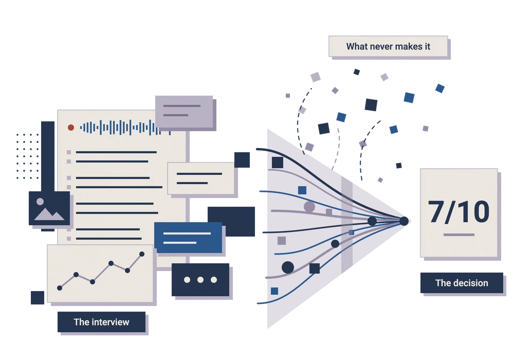
Employers and candidates live in parallel universes.
Process consistency is an illusion during the interview process.
"Feedback" is a delusion, and ghosting is standard procedure.
Both sides are paranoid (and deeply confused) about AI.
About the Survey
Two mirrored surveys fielded in August 2026: 257 employers and 174 job seekers, with 40 percent of questions worded so both groups answered the same thing from opposite sides of the table. Structured interviews with talent and HR leaders ran alongside and are quoted throughout.
Foreword Colleen Gallagher, Chief Executive Officer, Textio
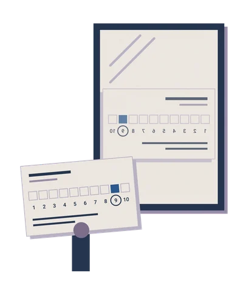
A few years before I came to Textio, I sat in a debrief for a senior role where four smart people had spent a combined six hours with the same candidate. Then somebody asked the question that ended the meeting, which was simply: what did she actually say when you asked about the reorg?
Nobody could answer. We hired her anyway. She was good. That's not the point. The point is that we made a six-figure decision on the basis of four memories that had already started rewriting themselves before we sat down.
That's why we built Lavalier, and I want to be careful about how I say this, because this report wasn't written to sell it. The bet is that the interview is the single richest source of evidence in the entire hiring process and that almost all of it evaporates within about ninety minutes of the conversation ending.
Matt and the team at Kyle & Co designed this study, fielded it, and interpreted it without us. We paid for the work and we saw the findings when they were done.
Eighty-five percent of the employers in this study already run some form of interview intelligence tooling. And on the measures candidates actually experience, almost nothing has moved. I read that as an unfinished job rather than a failed premise. Capturing an interview isn't the same as learning anything from it, and the gap between those two things is where the next several years of this category will be decided. The report you're about to read is the clearest map I've seen of that gap.
Introduction Matt Charney, Principal Analyst, Kyle & Co
Let’s be real. If you want to stress-test your hiring process, it takes about five minutes and zero budget. Just grab a recent hire, track down every single person on the interview panel, and ask them one simple question: can you show me the actual evidence you used to make your decision?
They're going to come back to you with one of three things. Usually, it's the resume—a document that HR pundits have been declaring "dead" for a decade, yet somehow refuses to die. Or, they'll hand over a scorecard grading arbitrary, subjective BS like "executive presence" or "culture fit" on a scale of 1 to 10.
Just because you assign a number to a vibe doesn't make it measurable data. Finally, you'll get unstructured feedback about "good chemistry" or a "gut feeling." It's amazing how fast personal bias masquerades as empirical evidence just because somebody typed it into an ATS.
It’s completely wild for a function so obsessed with metrics. We can track a candidate's journey from a random job board click two years ago (or try, as the case may be), but we completely struggle to objectively explain the actual 60-minute final interview that decided the offer.
Why this report exists. Interviews are the absolute biggest goldmine of talent data we have, yet almost nobody does anything useful with that data once the decision is made. These conversations live in the wild, totally divorced from core systems.
Let's face it: legacy HR tech is basically just an expensive digital filing cabinet. It was built to keep records, not to actually learn from human interactions. Hell, just listening to a hiring manager describe a role on a kickoff call tells you exactly how detached the job has become from the official job description—and that’s a massive business problem disguised as a hiring conversation.
What you'll learn. Here’s what you're getting: Eight major findings framing the actual state of interview intelligence, a maturity model, and a breakdown of what the smartest leaders are doing differently. We’re wrapping it up with ten practical takeaways—and spoiler alert, the first four won't cost you a dime in new software.
(For the record: Textio funded this study, but they didn't touch the design, the analysis, or the conclusions. The hot takes are entirely ours.)
Executive Summary
1Employers and candidates live in parallel universes.
Employers give their interview experience a glowing +48 NPS. Candidates give it a dismal +3. HR leaders are rating company policies and procedures; candidates are rating the reality of how those processes are operationalized.
2Hiring managers are wildly overconfident in their gut.
Employers score their ability to predict performance at an 8.3 out of 10. Actual research puts structured interviews around a modest 0.42 correlation. Leaders think they’re futurists or fortune tellers; the data says they’re barely beating a coin flip, and almost no one checks post-hire data to see if they were right. This is likely because few have this data in the first place, as we’ll discuss.
3Process consistency is an illusion during the interview process.
78% of employers swear they could produce audit-proof interview records in court. Yet only 51% of candidates report getting a consistent process, and 7% caught their interviewer visibly winging it. Having a policy on paper isn't the same as executing it in the room.
4Candidates are left completely in the dark.
Candidates rated their understanding of how they were evaluated at 6.79 out of 10, which was the lowest, and most distributed score in the entire study. Fully 23% received a vague explanation or nothing at all. It’s the easiest, cheapest fix in talent acquisition, yet we persistently fail at basic transparency.
5Recording a Zoom call isn't "interview intelligence."
85% of employers use interview tech, but almost all of them stop at transcription. Having a digital transcript doesn't automatically make your hiring decisions smarter. Capture is solved; turning that raw data into actual business intelligence hasn't even started at most employers.
6Both sides are paranoid (and deeply confused) about AI.
Employers rate their ability to spot candidate AI use at an 8.1 out of 10, despite only 36% actually enforcing standardized rubrics. Meanwhile, candidate AI admissions swing wildly depending on how you ask the question. It’s an arms race driven by false confidence, sketchy metrics and a whole lot of black boxes.
7"Feedback" is a delusion, and ghosting is standard procedure.
81% of employers claim rejected finalists get meaningful feedback, but only 43% of candidates say they ever saw it. Worse, 68% of employers openly admit to ghosting candidates. It’s terrible business, and in jurisdictions like Ontario, it’s now literally illegal.
8Candidates judge the journey, not the destination.
Two-thirds of how candidates evaluate a hiring process comes down to two simple things: fairness and communication. Whether they actually got the job accounts for a pathetic 6%. Candidates don't hate being turned down; like most of us, they hate being ignored, misled or left in the dark.
Section 1:
The Current State of Interview Intelligence
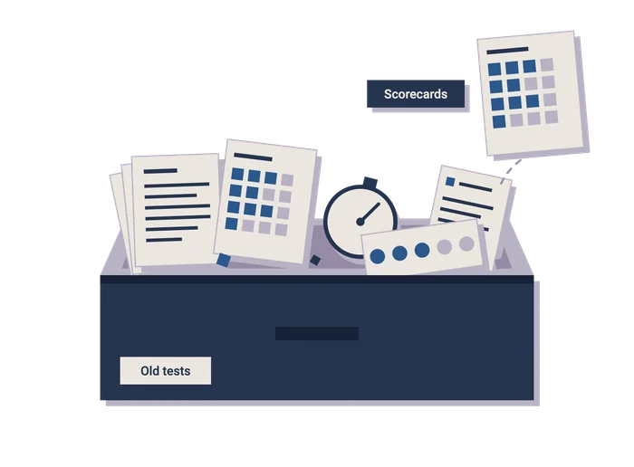
Almost nothing about the modern interview was designed. It accumulated, like a junk drawer. In 1921, Thomas Edison decided college graduates were ignorant and built a 146-question test to prove it; other companies copied the format without copying the reasoning. Thousands of employers later copied Google's brainteasers, until Google compared tens of thousands of its own interview scores against subsequent performance and found no relationship between them.
An engineering director in San Jose described layer one more precisely than any vendor deck we've seen: "We had recordings. Nobody was watching the recordings, because watching recordings is not anybody's job."
Read in full
The pattern hasn't changed in a century: a senior leader has a theory about what predicts performance, other employers borrow the questions because the company is successful, and checking whether successful candidates became successful employees comes later, if at all.
Structured interviews have ranked at or near the top of selection-validity research for decades (most recently Sackett, Zhang, Berry and Lievens, Journal of Applied Psychology, 2022), yet an unstructured conversation can leave an interviewer feeling so certain that checking the evidence seems unnecessary.
Capturing the conversation used to be the technical obstacle. With 85 percent of employers now using interview intelligence tooling, the harder question is what adoption delivers. Asked what their organization is investing in AI to achieve, employers put efficiency and speed first at 51 percent and better decision quality second at 45 percent. The more revealing number is that only 23 percent report using interview intelligence to improve interview quality or reduce bias.
Interview intelligence is three layers, and most buyers own one. Capture covers recording, transcription, structured notes, consent and retention; most organizations have it, and many treat it as the destination.
Analysis examines question quality, rubric coverage and agreement between interviewers, and the maturity model places 14 percent of organizations at Level 4 or above, the tiers associated with that work.
Decision support brings comparable evidence into debriefs and connects interview judgments with later performance; 5 percent of employers reach Level 5, where that becomes possible.
Section 2:
The Interview Intelligence Maturity Model
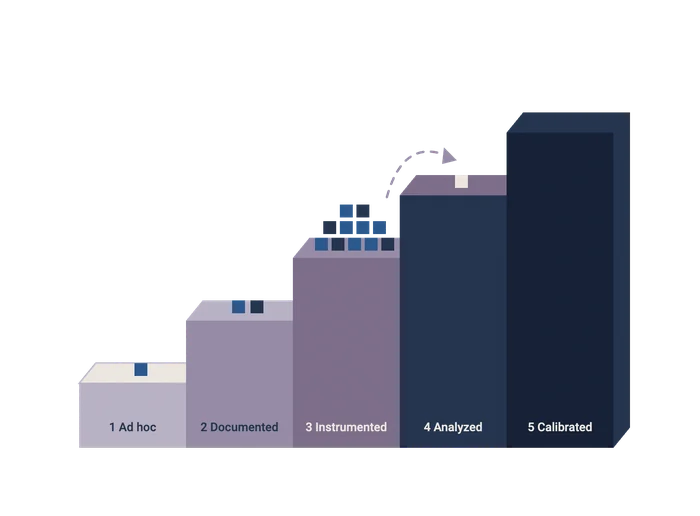
This model combines the survey responses with the qualitative interviews, and no level rests on an employer's own maturity rating.
1 - Ad hoc
Questions vary by interviewer. Either no rubric exists or nobody follows one.
2 - Documented
Core questions and a rubric exist and are usually followed, but adherence isn't measured and records may not be retrievable.
3 - Instrumented
Core structure is in place, tools are live across at least some teams, and employers are confident they could produce complete documentation on demand. Interviews are captured, but systematic use of that evidence isn't established.
4 - Analyzed
Structure applies to every role, tools cover most interviews, and AI supports decisions across multiple HR functions.
5 - Calibrated
Level 4, plus data connected across systems under governance and formal accountability for experience and outcomes, which makes it possible to validate interview judgments against post-hire performance.
Levels 4 and 5 are inferred from AI-maturity and accountability responses rather than measured directly, so treat them as upper bounds.
Read in full
Half the market has purchased tech no one uses. Sixty-three percent of employers reach at least Level 3, and roughly four in five of that group go no further. The tools are bought; what's missing is someone to examine the output with the authority to act on it.
Employers describe a process one level above the one they run. Eighty-eight percent say interviewers always or usually use the same core questions and a defined rubric, but only 36 percent say always, the requirement for Level 4. A transcript can pass for analysis the same way a scorecard in a shared folder passes for consistent evaluation.
Crossing into Level 4 takes three commitments a software purchase can't make: a named owner for interview quality, a recurring review by people with the authority to change the process, and executive tolerance for findings that reflect poorly on senior interviewers.
Reaching Level 5 means connecting interview evaluations with post-hire performance records, and agreeing to examine what that connection reveals can be harder than the engineering.
The Interview Intelligence Efficacy Index
The Interview Intelligence Efficacy Index
Traditional recruiting metrics like 'Time-to-Hire' or 'Offer Acceptance Rate' measure process speed, not decision quality. The Efficacy Index shifts focus to candidate experience, evaluation structure, and post-interview accountability: the true indicators of predictive hiring.
How to read the dimensions:
The index evaluates five key pillars: Consistency, Closure, Transparency, Proportionality and Calibration.
Below is a breakdown comparing common market realities against the benchmarks our research demonstrates as highly effective practices and processes.
| Dimension | What it measures | What our research says |
|---|---|---|
| Consistency | Same core questions against a standardized rubric, with records retrievable inside two business days | 52% of employers say "structure exists but adherence varies"; only 36% say always. 51% of candidates reported the interview process matched their expectations. |
| Closure | A definitive outcome for every interviewed candidate, actionable feedback for finalists and decisions closed within two weeks | 68% of employers admit ghosting; 17% give feedback only when asked |
| Transparency | Criteria published in advance, success measures explained upfront and automated tools disclosed | Candidates score understanding of evaluation 6.79 out of 10; 23% never heard how success would be measured, or got a vague answer |
| Proportionality | Rounds capped and defended, candidate time under five hours, take-home assignments compensated or eliminated | 62% run three rounds; 44% of candidates say two is enough |
| Calibration | Interview scores cross-referenced with job performance annually, evaluator-level bias corrected, and those insights driving structural change | Employers rate predictive accuracy 8.3 out of 10 against a published estimate near .42 |
Calibration is the least developed dimension, because someone still has to connect the evidence to outcomes.
Section 3:
How Leaders Differ from Laggards
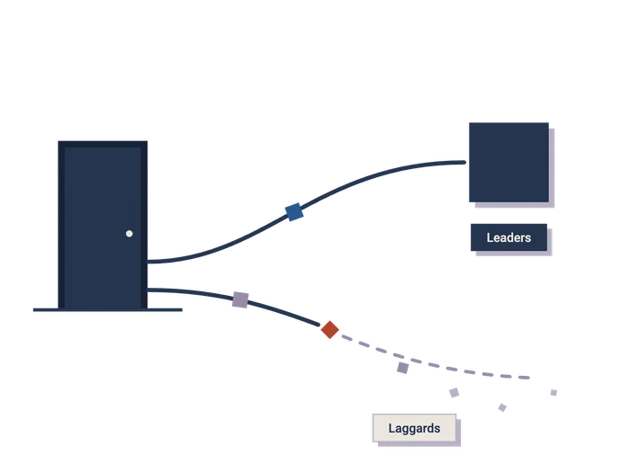
Fourteen percent of employers reach Level 4 or 5 (the leaders), and 37 percent sit at Level 1 or 2 (the laggards). The clearest differences emerge after the interview ends.
Ghosting
Feedback
Documentation
Read in full
- Ghosting: 16 percent of leaders failed to give an interviewed candidate a final answer in the past twelve months, compared with 86 percent of laggards.
- Feedback: every leader says rejected finalists always or usually receive substantive feedback; two-thirds of laggards say the same.
- Documentation: leaders rate their ability to produce complete records at 8.89 out of 10, compared with 7.46 among laggards.
The procurement illusion. Fifty-nine percent of laggards have bought interview intelligence platforms, and their reported ghosting rate is still 86 percent. Software can make follow-through easier, but it can't make the commitment.
Where the leaders are. Leaders appear in every headcount tier, concentrated among mid-sized organizations with enough hiring volume for useful analysis. Large enterprises cluster at Level 3, with sophisticated capture tools, substantial archives and trouble connecting them to post-hire performance.
What leaders are held accountable for. Leaders rate their predictive accuracy at 8.86 out of 10 against 7.77 among laggards, which establishes greater confidence rather than greater accuracy.
Less intuitively, 67 percent of laggards say HR is formally accountable for hiring outcomes and quality of hire, compared with 50 percent of leaders and only 6 of the 24 employers at Level 4. Accountability for outcomes a team can't influence leaves it little room to improve; process execution, where recruiting has direct control, is the better place to start.
Self-assessment isn’t self-awareness. An employer NPS of +72 versus a candidate NPS of +3 isn't a statistical discrepancy; it's a structural blind spot. High self-reported scores don't mean your interviews are actually working; they just mean nobody in leadership has bothered to check the candidate data.
Section 4:
The Confidence Gap
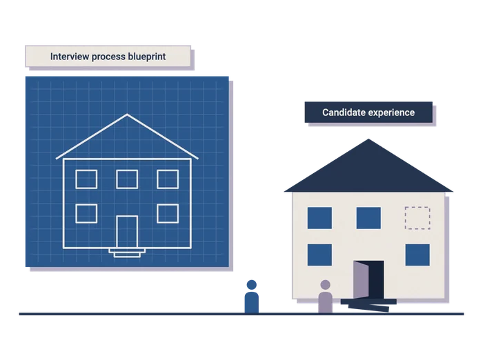
Calibration examines whether interview judgments are checked against what happens after the hire.
Employers score their own interview experience +48; candidates score theirs +3. Both come from a mirrored question: would employers recommend their own interview experience if they went through it tomorrow as a candidate, and would job seekers recommend their most recent process to a friend?
A head of talent at an enterprise technology company in Seattle put it sharper than we could: "Anyone rating their own interviews a nine is not making a claim about interviews. They are making a claim about themselves."
Read in full
Employers returned 52.5 percent promoters and 4.3 percent detractors (11 people out of 257), while candidates returned 36.8 percent promoters and 33.9 percent detractors (59 out of 174).
One plausible explanation is that employers rate the process they designed, while candidates rate its delivery by whichever recruiter and hiring manager they happen to get. It's easy to admire the blueprint when you're rarely asked to walk through the building.
Employers rate their interviews 8.3 out of 10. Candidates, asked the mirrored question about predicting on-the-job performance, averaged 6.93. The published estimate of around .42 for structured interviews describes measured prediction; the self-rating describes how confident employers feel.
That confidence persists because interviewers get so little feedback: someone who meets a hundred candidates and recommends twenty sees the good hires as proof the interview worked, while the eighty rejected candidates disappear from view.
The true cost of the confidence gap. Fifty-six percent of candidates say a poor interview experience would discourage them from reapplying, and 35 percent say it would discourage them from buying from the company.
For consumer-facing brands responsible for interviewing thousands of people, that's a bigger business risk. Even though recruiting produces the data, brand marketing represents an internal significant stakeholder.
Section 5:
The Data We Generate and Throw Away
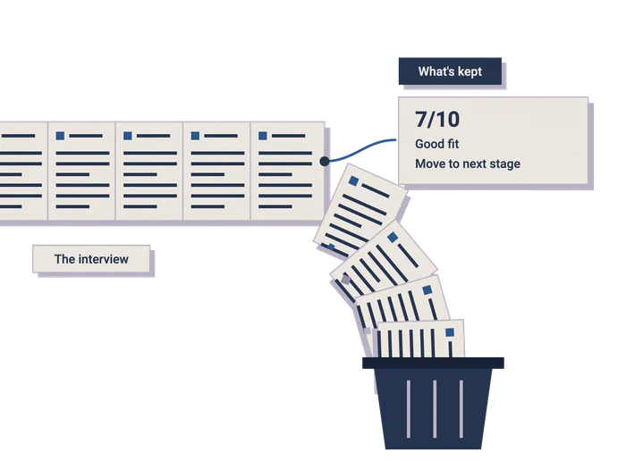
Calibration depends on the evidence that makes that comparison possible, and on what employers do with it.
A 45 minute interview produces a substantial record of how a candidate reasons, how the manager explains the job and what the interviewer concludes. What survives is often a number or two and a few sentences of feedback, which is an impressive rate of information loss for a process that costs so much to run.
“We pulled interview scores against twelve-month performance ratings for about four hundred hires. Two things came out. The process holds up better than I feared in aggregate, which was a relief. And three of our most requested interviewers, the ones hiring managers specifically ask for, had almost no correlation between their scores and how those people performed.”
Read in full
Sales teams used to keep about as much (a 1-5 rating and the phrase "good fit, strong need") until conversational intelligence gave them a reason to mine those calls around 2018.
Candidates offer a similar real-time, informed read on how the labor market sees the company, and over the next thirty-six months the employers that use it could gain a meaningful analytical (and competitive) advantage.
The organizations that checked learned things nobody else knows. Only a handful of the leaders we interviewed had compared interview evaluations with post-hire outcomes.
A director of talent acquisition at a financial services firm in Des Moines walked us through it:
Popularity and company politics had been doing work that should be predicated entirely on predictive evidence, instead.
Six things the transcript may already be telling you. The applications below are hypotheses drawn from the qualitative interviews, not findings tested by this survey.
| Signal | What the transcript shows | What it may predict |
|---|---|---|
| Role drift | How hiring managers describe the role live, against the job description of record | Job architecture decay, and the pay and mobility problems that follow |
| Evaluator alignment | Score dispersion across a panel for the same candidate | Whether a leadership team agrees on what good looks like |
| Compensation intelligence | Candidate-stated current pay, counteroffers and reasons for leaving | Competitor pay movement, ahead of published survey data |
| Attrition signal | Why candidates are leaving their current employers, unsanitized by any relationship they need to protect | Systemic problems that may already exist inside your own walls |
| Competitive intelligence | How senior candidates from rival firms describe solving shared problems | The kind of market read go-to-market teams pay for |
| Adverse impact | Variance in questioning, tone and interruption across candidate groups | Bias patterns invisible in aggregate hiring outcomes |
On adverse impact, ACM FAccT research found that asynchronous video screening itself reduced perceived fairness for candidates with disabilities and from underrepresented backgrounds, whether a human or an algorithm did the evaluating.
Nobody has the data to measure quality of hire. Forty-nine percent of employers list it among their top workforce priorities, and 60 percent say HR is held accountable for outcomes like it. The most common measure in our interviews was a manager satisfaction survey at ninety days, and a third acknowledged they don't measure it at all.
LinkedIn's ongoing research consistently ranks it the most important talent metric and the hardest to capture. Our research suggests why: outcome data sits in the HRIS, but the scores and reasoning behind the original decision often were never captured.
Why no one uses interview data: Putting interview data to work takes one person responsible for interview quality, interview and performance data standardized in a single system, and leaders willing to change the process in response to what they find.
The Des Moines director offered a useful warning: "Nobody warns you that the reward for finally measuring something is a set of conversations you would rather not have."
Section 6:
Structure, Consistency and Defensibility
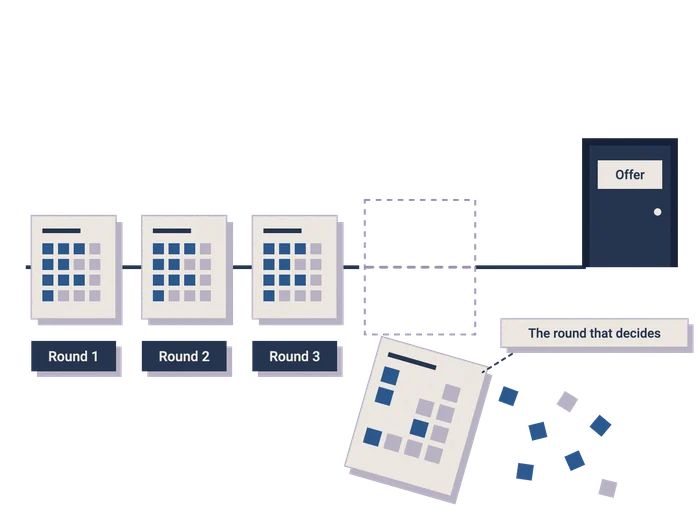
Consistency and Proportionality examine whether candidates receive comparable interviews and whether the process asks for a reasonable amount of their time.
Eighty-eight percent of employers say interviewers always or usually ask the same core questions and use a defined rubric. Only 51 percent of candidates describe their experience as structured and consistent, and that's after decades of research and more conference presentations than anyone needs. Structure tends to weaken as candidates advance, with senior stakeholders setting the rubric aside in the rounds that carry the most weight.
Core finding: Compliance without calibration is a recurring weakness among otherwise mature talent organizations.
Read in full
Candidates seek evaluation clarity, not process flexibility. Asked which interview format is fairest, only 25 percent of candidates chose a purely conversational interview; 52 percent preferred a hybrid and 20 percent a fully structured format. Their clearer frustration is not knowing how the decision gets made.
Documentation competence reflects compliance, not quality. Employers rate their readiness to produce complete interview documentation in a legal dispute at 8.28 out of 10, and it tends to be strongest where an external requirement makes it unavoidable. An organization can pass a documentation check without ever checking whether its judgments predict performance.
Three rounds is an artifact, not a process. Sixty-two percent of employers run exactly three interview rounds for professional roles, and nearly six in ten say three is ideal; 44 percent of job seekers think two is enough to judge fit.
62% of employers run exactly three interview rounds
44% of job seekers think two is enough
A talent lead at a UK consulting practice explained her team's fourth stage: "That additional leadership check was instituted because an executive made a bad hire seven years ago, and decided adding their personal blessing was the solution. That's literally the entire backstory." Interview stages accumulate like organizational scar tissue.
Section 7:
AI On Both Sides
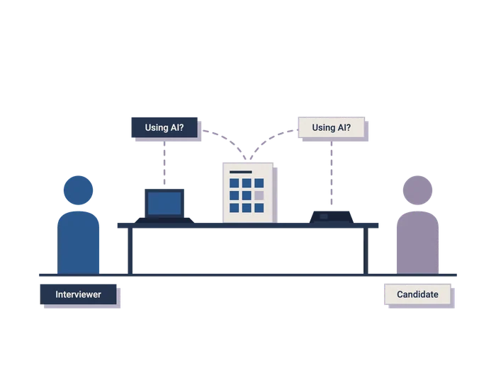
Transparency covers what candidates learn about the evaluation and what employers disclose about the tools involved.
Employers rate their ability to spot a candidate using AI during a live interview at 8.11 out of 10. Only 36 percent always ask every candidate the same core questions against a defined rubric.
The Seattle head of talent rated his own team four out of ten: "Confidence without a feedback loop is just a feeling with a number attached."
Read in full
When questions and scoring change between candidates, an interviewer can't readily tell ordinary differences in answers from signs of assistance, and errors go uncorrected in both directions.
What candidates admit depends on how you ask. Asked directly about live AI assistance during a video interview, 4 of 174 candidates said yes. Asked differently later in the same survey, 17 reported covert AI use and 20 said someone had helped them answer in real time.
of 174 candidates
Nobody documents where interview prep ends and the real interview begins. Employers ranked four uses of candidate AI by acceptability: mock interviews first (mean rank 1.91), then preparing answers to practice questions (2.24), assistance during live interviews (2.62) and use on take-home assignments (3.23).
Few had put that preparation-versus-participation line in writing, so two candidates using the same tools can get different treatment from different interviewers.
The Des Moines director's team published theirs on the careers page: "Use whatever you want to prepare. Do not let software answer live questions for you."
Disclosure is becoming law, and what you measure matters. Illinois' rules on AI in hiring are already in force, and New York City's Local Law 144 has required bias audits and candidate notices for automated hiring tools since 2023.
Connecticut's notification requirements take effect in October 2026, Colorado's enforcement begins in January 2027, and Ontario pairs its 45-day rule with AI-related requirements.
Recording a human conversation and having AI conduct or evaluate one are different things. Research published in PNAS by Goergen, de Bellis and Klesse (2025), across 13,342 participants, found that people who expected AI assessment emphasized analytical qualities and downplayed intuition because they believed the algorithm would reward it.
That finding concerns perceived AI evaluation, not recorded human interviews. The fixes aren't glamorous: disclose how the tools are used before substantive questioning begins, explain what will and won't be analyzed, and make sure actual use matches the explanation.
Section 8:
Authenticity, Fraud and the Hidden Trust Tax
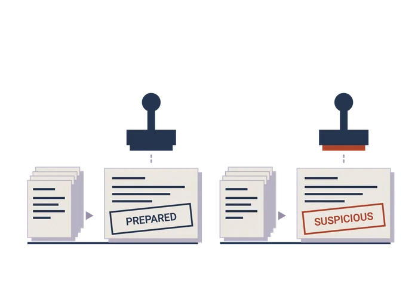
Transparency also addresses what happens when neither side explains how it's using technology.
The trust tax is being paid by your candidates. Thirty-nine percent of job seekers report being wrongly suspected of embellishment, cheating or unauthorized AI use: 18 percent once, 17 percent several times, and 4 percent who felt judged without being confronted directly.
Read in full
Candidate misrepresentation is a pervasive market concern, with 83 percent of job seekers reporting widespread embellishment and 50 percent encountering phantom job requisitions or fraudulent recruiters.
Fraud gets caught downstream, not in the interview. Talent leaders most often described discovering misrepresentation during background checks, reference verification and post-offer compliance work, despite their confidence in spotting it live.
A global head of talent at a Dublin technology firm described two verified proxy incidents in engineering:
"Both were caught during onboarding compliance rather than in live rounds, which tells you where the actual risk control lives, and it is definitely not where we thought."
Treating the interview as a real-time lie detector funds a capability nobody has demonstrated; the structured record earns its keep later, when risk teams can revisit what was said.
Organizations are starting to confuse preparation with fraud. As a Dublin technology leader observed: "Hiring managers have started treating polish as suspicious."
Penalizing preparation can disadvantage candidates who use free materials to learn an unfamiliar process, along with multilingual applicants whose practiced answers are more fluent than spontaneous ones.
Section 9:
Candidate Closure, Actionable Feedback, and Brand Value Creation
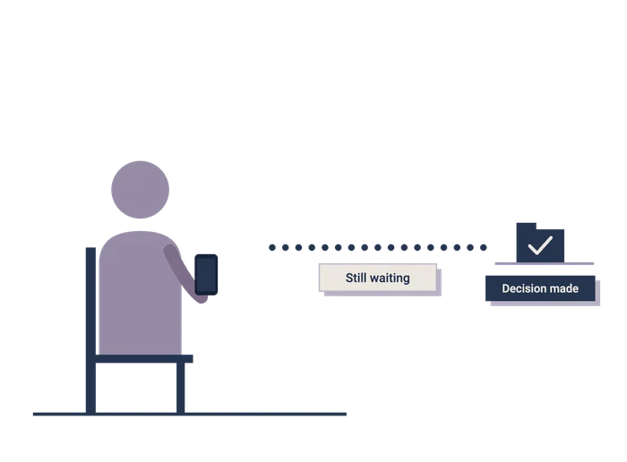
Closure examines whether interviewed candidates receive an answer, and the consequences when they don't.
Eighty-one percent of employers say rejected finalists always or usually receive substantive, personalized feedback. Only 43 percent of rejected finalists describe what they received as useful. About one in six employers (16.7 percent) provides feedback only when asked, which favors candidates who know they can ask.
A people operations lead at a nonprofit in Toronto calls every rejected finalist herself: "It costs me about four hours a month and it is the highest return four hours in my calendar."
Read in full
Sixty-eight percent of employers say that in the past twelve months they failed to give a final decision to someone who had completed at least one live interview, and 57 percent of candidates say it happened to them in the past eighteen months. In iHire's October 2025 survey of 1,024 job seekers, 53 percent said an employer had ghosted them during their search.
A talent acquisition partner at a university in Ann Arbor explained how it happens:
"The committee decides in April and nobody is assigned to tell the other four finalists, and then it is June, and telling them in June feels worse than not telling them, so nobody does."
Ghosting usually reveals a gap in ownership, and a clearer workflow closes it by assigning the handoff and checking that the candidate actually got an answer. A requisition can be closed in the system while the candidate is still waiting by the phone.
Since 1 January 2026, Ontario employers with 25 or more staff have been required to tell every candidate interviewed for a publicly advertised role whether a hiring decision has been made, within 45 days of the last interview. That turns notification into a legal obligation, rather than a courtesy someone presumably handled.
A rejection doesn't erase a good interview experience. Candidates named fairness and communication above everything else in judging a hiring process; getting the job ranked last, at 6 percent.
That challenges the convenient assumption that negative feedback is simply rejection talking. The fixes don’t cost anything, but can generate significant ROI: explain the criteria at the start, give useful feedback at the end and assign responsibility for both. The leader cohort reports doing all three at approximately twice the rate of everyone else.
Section 10:
The Future of Interview Intelligence
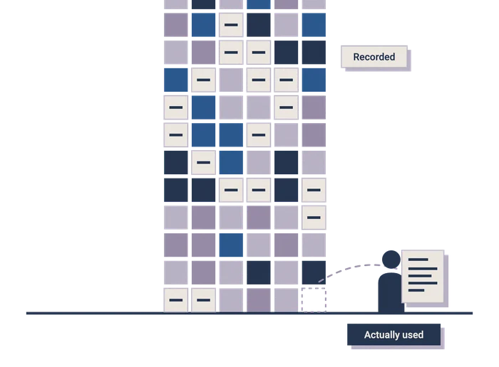
The next phase of interview intelligence will test whether employers can turn everything they're recording into decisions they can actually defend.
Here are six predictions on the future of interview intelligence, along with our overall confidence in this forward-looking forecast.
| Prediction | Confidence |
|---|---|
| 1Compliance turns recordings into records, and retention becomes somebody's problem within eighteen months | High |
| 2Interviewer accuracy migrates into performance management, clumsily at first | Moderate to high |
| 3Quality of hire acquires a working definition as employers seek a standard against which to validate interviews | Moderate to high |
| 4Interview data spreads beyond HR into compensation, workforce planning and competitive intelligence | Low to moderate |
| 5Some final rounds return to in-person meetings for senior and security-sensitive roles, with identity assurance contributing to decisions described as return-to-office | Moderate |
| 6Standalone tools get absorbed into applicant tracking systems and suites | Moderate to high |
The buyer's dilemma. Consolidation gives vendors an easy proposition to sell: record the conversation, populate the scorecard and present the result as intelligence. Buyers should ask what survives an acquisition beyond transcription, because if analysis gets less investment while documentation becomes standard, employers may capture more of every interview without becoming any better at deciding whom to hire.
Key Takeaways
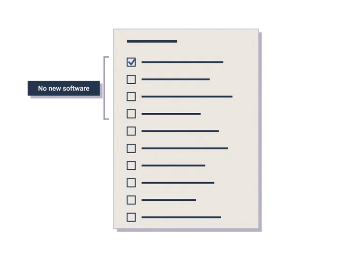
Each recommendation is tagged with the Efficacy Index dimension it improves and the maturity level it unlocks. The first four require exactly zero software budget.
If you’re sitting at Level 3 alongside half the market, steps 3, 5, 7, and 9 are your direct path out of the middle and into market leadership.
1(Transparency · Unlocks Level 2)Let Candidates Know How Their Interview Will Be Evaluated
Tell candidates what you're evaluating and who makes the final call before the conversation even starts. Two quick sentences at the top of the call and a brief overview on your careers page cover it. It costs nothing, fixes the lowest-rated metric in this study, and forces your interviewers to actually use the criteria they just stated out loud.
2(Transparency · Unlocks Level 2)Establish and Publish a Clear Stance on Candidate AI Usage
Put your AI rules in writing: using tools to prepare is fine, live teleprompting during the call isn't. Without clear, written guidance, individual recruiters end up making up their own arbitrary rules on the fly, leading to wildly different outcomes for candidates using identical tools.
3(Proportionality · Unlocks Level 2)Eliminate Redundant Interview Rounds
Cut the interview stage that hasn't changed a single hiring decision in the last twelve months. Any round that exists purely to confirm what you already know isn't evaluation. It's performance art, and everyone involved needs that time back.
4(Closure · Unlocks Level 3)Better Feedback Starts With Better Interview Data
Stop forcing recruiters to translate vague interviewer vibes into candidate feedback. Give your TA team direct access to real criteria, specific findings, and actual reasons behind the pass. While you're at it, make pending or frozen requisitions transparent so nobody gets left hanging in pipeline limbo.
5(Transparency · Unlocks Level 3)Implement Retroactive Data Retention and Disposal Schedules
Set a hard data retention and disposal schedule, publish it, and apply it to the archive you already have. Hoarding years of unmonitored candidate recordings doesn't make you sophisticated; it creates a massive legal, privacy, and discovery liability that doesn't disappear just because the files are sitting unread.
6(Calibration · Unlocks Level 4)Establish Explicit Executive Accountability for Interview Quality
Name one executive who owns interview quality, and define what "quality" actually means before handing them the reins. When we asked who owned this, leaders hesitated before naming the ATS admin, which is precisely how organizations get stuck paying for Level 3 tools without driving Level 4 outcomes.
7(Consistency · Unlocks Level 4)If Nobody Assessed the Answer, You Didn't Assess the Candidate
Audit what your scorecards actually contain, not just how many get filled out. High completion rates and fast debrief times measure administrative compliance, not hiring rigor. Verify that scorecards link actual evidence to defined criteria, because blindly approving an automated AI summary isn't evaluating talent.
8(Calibration · Unlocks Level 4)Prioritize Analytical Intelligence Over Recording Infrastructure
At contract renewal, stop paying for prettier transcripts and start demanding real business intelligence. Ask vendors if their platform measures evaluator consistency and exports structured data directly into post-hire performance records, then assign a human to actually act on those insights.
9(Calibration · Unlocks Level 5)Execute a Pilot Validation Study on a Key Job Family
Pick one high-volume role and check whether your interview scores predicted a single thing. Pull 50 hires from the past two years and run scorecard ratings against 12-month performance and retention. You’ll either validate your process or expose a broken rubric before wasting another dime on software.
10(Calibration · Unlocks Level 5)Leverage Interview Data as Strategic Business Intelligence
Start tracking role drift across high-volume requisitions quarter over quarter. Once that pipeline is clean, scale the analysis to extract real compensation intelligence, early turnover signals, and leadership alignment. Candidate conversations are the richest talent data you have. It's time to stop treating them like disposable clutter.
The Bottom Line
Let’s be honest: capturing an interview used to be a technology problem, and vendors have solved it. But recording a video call and generating a transcript doesn't make your hiring decisions a single bit smarter; it just makes your bad choices searchable.
The real work starts when you stop treating candidate conversations as administrative check-boxes and start treating them as actual business intelligence. The recording tools are already sitting on your desktop; whether you use them to build a real talent strategy or just another ridiculously overpriced piece of shelfware is entirely on you.
Methodology
Two mirrored surveys were fielded simultaneously in August 2026, with forty percent of items deliberately worded for direct cross-population comparison.
The employer survey gathered 257 complete responses. Fifty-seven percent (147) were heads of talent acquisition or recruiting leaders and 25 percent were chief people officers or heads of HR. Seventy-seven percent (199) worked at organizations of 100 to 999 employees.
The job seeker survey gathered 174 complete responses from people who had completed at least one live interview within eighteen months. Respondents skewed toward managers, mid-to-senior individual contributors and directors; hourly and frontline workers were screened out, so the findings should not be read as describing that population. Nearly all respondents were in the United States.
Structured interviews with talent and HR leaders ran alongside, were coded thematically and are quoted by role, industry and location, with the attribution mode confirmed by each participant. Survey quality control included attention checks, minimum completion times, straight-lining detection and duplicate screening.
The AI usage items were asked twice within the same session. Both were single-choice, so the counts understate total AI use and should not be summed. Every self-reported AI usage figure in this report, and in every other report on the subject, is a lower bound.
Maturity levels were assigned from behavioral items rather than self-ratings, because self-reported maturity runs optimistic in every study of this kind.
The Efficacy Index components, thresholds and cohort definitions were fixed in writing before any outcome analysis ran. Sponsor list composition was flagged separately and tested for skew on the primary outcome measures; there was none.
We'll share that analysis with anyone who wants to check our work, and we'd encourage readers to ask for the same commitment from every benchmark they read.
About Kyle & Co
Kyle & Co is a modern research and advisory firm helping HR and talent technology leaders make smarter decisions, faster. By blending practitioner insight, rigorous research and strategic advisory, we uncover the signals that matter most, then translate them into action. Our work spans custom research, workforce strategy and market analysis, supporting solution providers and HR leaders alike.
Kyle & Co is the team behind the Human-Centric AI Council, the Transformation Realness podcast and industry-shaping reports on quality of hire, workforce planning and responsible AI. We work with clients like Workday, ADP, GoodTime, Findem and SmartRecruiters.
Contact us: www.kyleandco.com · info@kyleandco.com · linkedin.com/company/kyle-co
About Textio
Textio is a leader in building tools that help high-growth companies recruit and give feedback to high-performing teams. The company's latest innovation is Lavalier, an interview intelligence platform that helps recruiting teams raise their hiring bar with structured interviews that gather hiring evidence.
Founded in 2014, people leaders at companies like Bloomberg, Cisco, Johnson & Johnson, Samsung, Spotify, and more choose Textio to help them attract and develop top talent. Textio has been named to Fast Company's World's Most Innovative Companies list several times, in addition to TIME's Top WorkTech Companies, Fortune Impact 20, Forbes AI 50, and CNBC Disruptor 50.
About the Advisory Panel
This study's instrument was reviewed by an independent panel of talent acquisition leaders who contributed to question design, challenged early framing and told us when a question was going to produce a number we couldn't defend. Our thanks to all of them for their time and their candor, particularly the ones who warned us that our first draft of the fraud module was going to generate a scary headline the data wouldn't support.